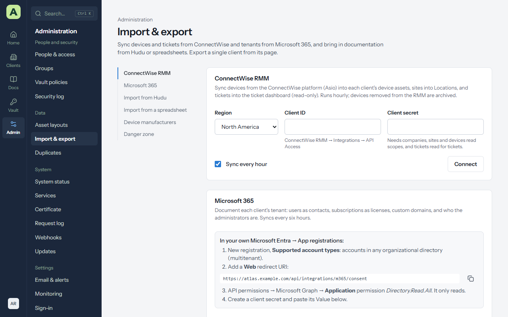
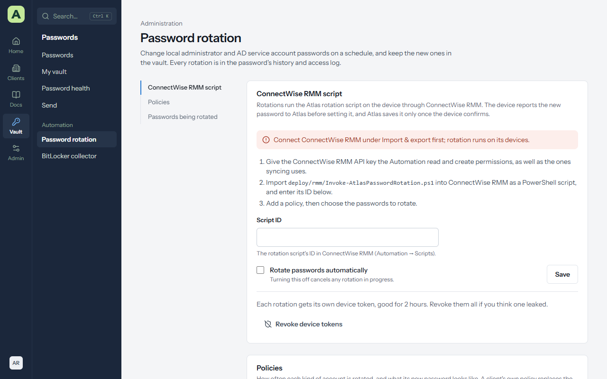

Chapter 12
Data and integrations
Everything on this page is under Admin → Import & export, except the BitLocker collector and password rotation, which are in the Vault area.


Import from Hudu
- In Hudu, go to Admin → API Keys and create a key. A key without password access imports everything except passwords.
- In Atlas, open Import & export → Hudu, enter the Hudu address (https only) and the key, and choose Connect. The key is encrypted with the master key.
- Choose what to bring in: kinds of data, companies, and asset layouts. The choices are saved for next time.
- Preview counts what Hudu has. Start import runs it in the background, with progress and a summary per type.
| Hudu | Atlas |
|---|---|
| Companies | Clients. A company is matched to an existing client with the same name. |
| Asset layouts and assets | Layouts and assets under the matching client. |
| Knowledge base articles | Documents for the client, or the MSP knowledge base. |
| Passwords | The client's vault, including one-time code keys. |
| Processes | Checklists. |
| Networks | Networks assets. |
| Relations | Links between the imported items. |
Running it again is safe. Atlas remembers which Hudu item became which record and updates it rather than creating a duplicate. Archived Hudu items are skipped.
Import a spreadsheet (CSV)
Import & export → CSV brings in clients, contacts, locations, assets (into a chosen layout) or passwords.
- Choose the kind of data and the file (comma, semicolon or tab separated, up to 10 MB, with a header row).
- Check the column matching. Atlas matches columns by name, including common alternatives such as "Company", and any column can be reassigned.
- Choose Check the file first. It reports every problem with its row number and saves nothing.
- Choose Import.
Importing passwords needs Edit + passwords on each client involved, and is recorded in the security log.
ConnectWise RMM
Atlas reads devices, their health and tickets from the ConnectWise platform API.
- In ConnectWise RMM, open Integrations → API Access and create a client ID and secret. Add the tickets read permission for tickets, and Automation read and Automation create if you'll use password rotation.
- In Atlas, enter them under Import & export → ConnectWise RMM.
- Link each ConnectWise company to a client, or let Atlas create the client.
- Choose what to sync: devices, tickets, and optionally BitLocker keys, by site or device.
The sync runs every hour, and Sync now runs it straight away.
- Devices become device assets with manufacturer, model, serial number, operating system, last check-in, online status and endpoint protection. Fields you add yourself are kept on each sync. A device the RMM no longer has is archived.
- Tickets are read-only and feed the Tickets cards.
- Warranty dates for Dell, Lenovo and HP are looked up when ConnectWise has none.
- BitLocker keys in a device custom field are saved to the client's vault, linked to the device.
Microsoft 365
Import & export → Microsoft 365 documents each client's tenant from one multi-tenant app
registration with Directory.Read.All, consented once per tenant. Users become contacts (with
their licences and admin roles), paid subscriptions become License assets with seats bought and assigned,
custom domains become Domain assets, and a Microsoft 365 asset lists the tenant's domains, subscriptions and
administrators.
Export
- One client: Export on the client's page. See Clients.
- Everything: System status → Back up now makes a full encrypted backup. See Keeping Atlas healthy.
- The API: with an API key,
/api/openapi.jsondescribes every endpoint.
BitLocker collector
Vault → BitLocker collector gives you a script for your RMM that reads each Windows machine's BitLocker status and recovery keys and sends them to Atlas.
- Make an enrollment. Choose the client, a name, and whether it covers all of the client's devices or one. The script downloads at once. Keep the file as you would a password: it holds an upload token, and Atlas can't show it again.
- Add it to your RMM as a PowerShell script for that client, run as SYSTEM. It needs no parameters.
- Try it on one machine. It prints one line of counts (never keys) and exits 0 when the report was uploaded.
- Schedule it every 6 hours, and after a recovery key is rotated.
Machines are matched to assets by serial number, then by name. Revoke an enrollment, or Block one machine, to stop uploads; keys already saved stay in the vault. The script only reads: it can't turn BitLocker on or off or change a key.
Automatic password rotation


Vault → Password rotation changes local administrator and Active Directory service account passwords on a schedule, through ConnectWise RMM.
- Connect ConnectWise RMM, with Automation read and Automation create on its API key.
-
Import
deploy/rmm/Invoke-AtlasPasswordRotation.ps1into ConnectWise RMM as a PowerShell script, enter its ID on the page, and tick Rotate passwords automatically. - Add a policy for each account type: how often, and the password rules. A policy for All clients is the default; a client's own policy replaces it.
- Choose the passwords: the client, the vault entry, and the device the script runs on. For an AD service account, choose a domain controller.
How it stays safe. The script sends the new password to Atlas before changing anything, using a token good for that one rotation for two hours. Only a confirmed change replaces the password in the vault; the old one moves to its history. A failure keeps the old password, is recorded in the access history and security log, emails administrators, and is tried again after a day.